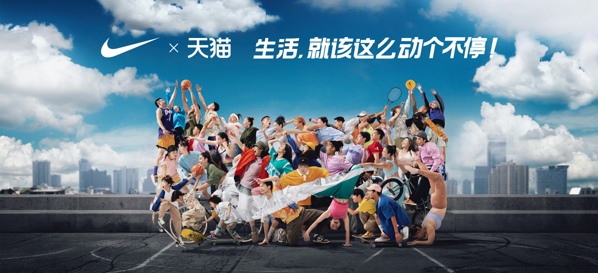
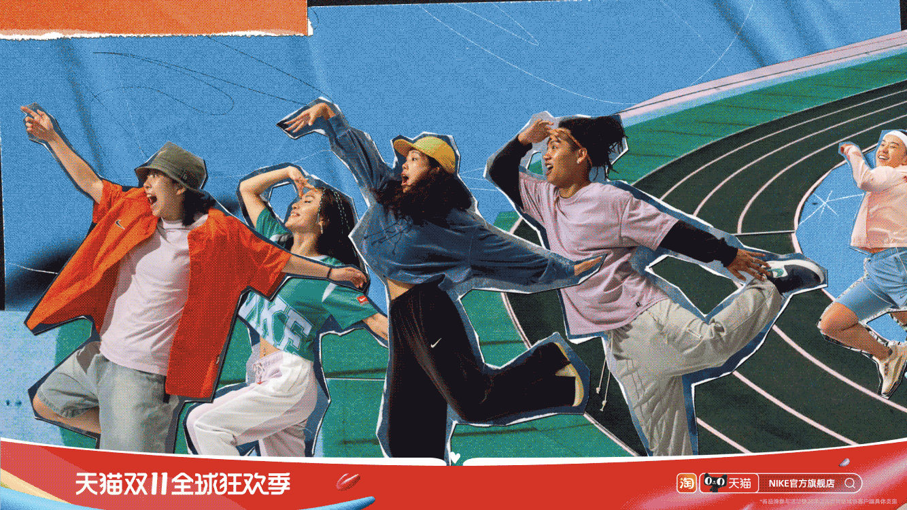
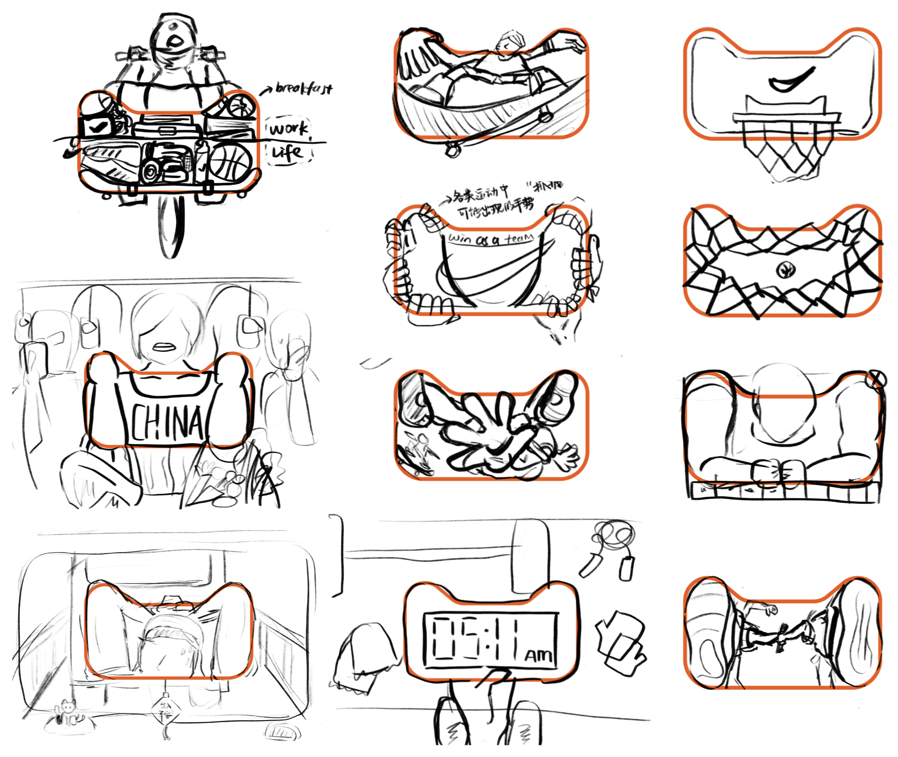
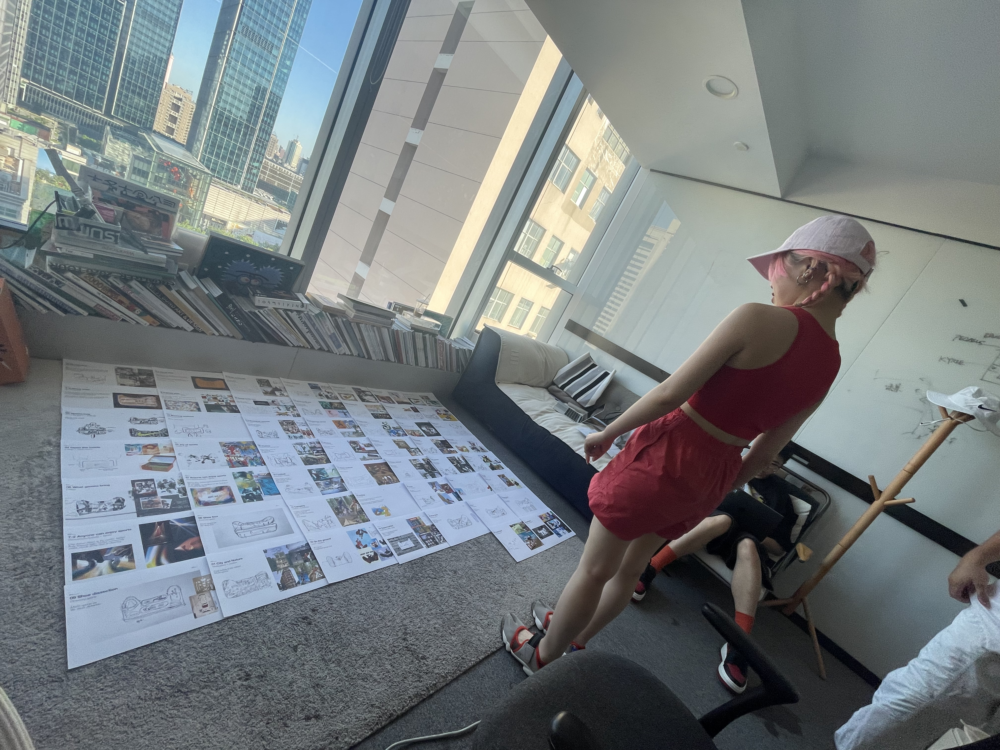
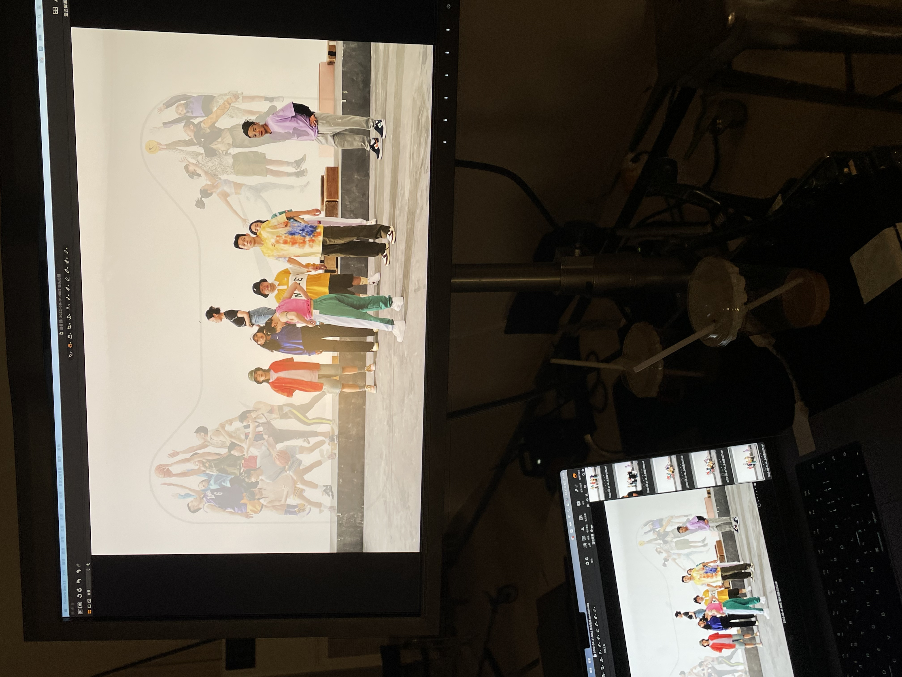

A campaign visual created for Tmall's Double 11 shopping festival, one of China's largest annual shopping events. Inspired by Tmall's iconic cat-head logo, the campaign featured athletes using their bodies to recreate its distinctive shape, connecting Nike's active lifestyle message with the festival's theme of better living.
Working as part of a five-person creative team, we generated over 60 creative ideas. I contributed from initial brainstorming to the final shoot.
Photography by Di Wei.

BEHIND THE SCENE


